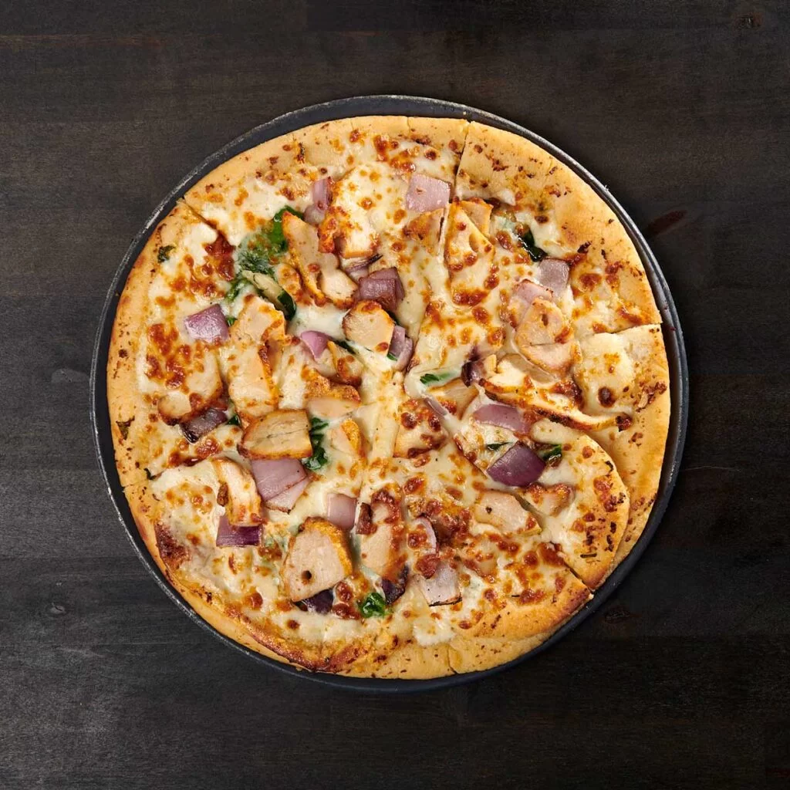

Chicken Garlic Pizza
Home

Description
This chicken garlic pizza has a strong garlic base and a simple topping mix. The chicken stays soft and the cheese melts into a smooth layer. It works for a quick dinner or a weekend meal.
The flavor is clean because the garlic sauce replaces heavy tomato sauce.
Ingredients
- Pizza dough
- Cooked chicken sliced
- Garlic minced
- Olive oil
- Mozzarella cheese shredded
- Parmesan cheese grated
- Salt
- Black pepper
- Italian seasoning
- Fresh parsley chopped
Steps
- Preheat the oven to a high baking temperature.
- Mix olive oil with minced garlic, salt, and black pepper.
- Spread the dough on a baking sheet.
- Brush the garlic oil over the dough.
- Add mozzarella cheese in an even layer.
- Add the sliced chicken on top.
- Sprinkle Parmesan cheese and Italian seasoning.
- Bake until the crust becomes firm and the cheese melts.
- Add fresh parsley after baking.
- Slice and serve.